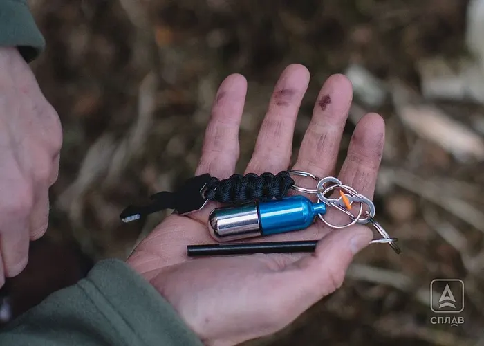

Общая информация
Костёр в походе — это не только тепло и горячая еда, но и настоящий навык, которому нужно учиться заранее. С современным снаряжением (горелка, тёплая одежда, фонарь) без огня обойтись можно, но развести его быстро и без проблем — даже в дождь или мороз — получается только у тех, кто подготовился заранее, а не импровизирует на месте.
- Возьмите с собой надёжный источник огня — спички, зажигалку или огниво — и сухую растопку: бересту, вату, пропитанную парафином, сухой спирт. Подготовьте и упакуйте её герметично (например, в zip-пакет) заранее, а не ищите сухой материал на месте.
- Ищите растопку среди веток, свисающих или надломленных на деревьях, а не на земле — трухлявые стволы, давно лежащие на земле, почти не горят. У хвойных нижние ветки часто сухие, даже если дерево живое.
- Выберите ровную площадку, которую не затопит дождём. Уберите вокруг сухие листья и траву, обложите место камнями или окопайте рвом, а на снегу — расчистите до земли или застелите ветками, чтобы растопка не намокла.
- Разжигайте сначала растопку и мелкий хворост, затем постепенно подкладывайте ветки покрупнее. Не заваливайте огонь сразу всеми дровами — без доступа воздуха костёр потухнет.
- Заготовьте дрова разного калибра заранее, с запасом на 1–2 часа горения — если побежите искать дрова посреди ночи, костёр может прогореть раньше, чем вы вернётесь.
- Никогда не оставляйте костёр без присмотра. Перед уходом полностью потушите его: разметайте угли по кострищу и залейте водой или засыпьте песком, даже если кажется, что огонь уже потух — тлеющий грунт под кострищем может стать причиной пожара.
- Открытый огонь разрешён не везде: во многих заповедниках и охраняемых природных территориях костры под запретом, а в лесах действуют правила противопожарного режима. Уточняйте местные ограничения заранее.
Фото


Фото: Splav.ru